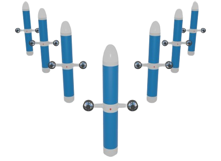

A. Seabot Lab
Note
Ce mini-projet est ciblé pour Linux. Privilégiez l'utilisation d'un PC sous Linux.
Cela n'a pas été testé mais tout devrait pouvoir être fait, parfois par des moyens détournés, sur Windows et MacOS. Si vous rencontrez trop de soucis, associez vous avec un camarade sous Linux.
Introduction
Dans ce mini-projet, vous allez mettre à l'épreuve vos connaissances en ROS2 et Docker pour développer une application conteneurisée de simulation d'un robot sous-marin.
Le robot, nommé seabot est un flotteur régulé uniquement en profondeur. Il est actionné par un moteur entraînant un piston sur une vis sans fin. La variation de volume permet au flotteur de modifier sa flottabilité et de réguler sa profondeur en se basant sur les mesures d'un capteur de pression.

Rendus
A chaque problème posé, vous seront précisés les rendus attendus. Au final vous rendrez, compressé dans un fichier zip, un dossier structuré contenant les rendus demandés pour chaque problème.
Contexte
Le robot est en phase de conception mécanique mais vous souhaitez déjà avancer sur l'intelligence embarquée sur le flotteur, en particulier sur les algorithmes haut-niveau.
L'un de vos collègues était en charge de développer une simulation du flotteur pour vous permettre de développer et tester vos algorithmes de navigation, observation, controle, ...
Vous vous apprêtez à récupérer la simulation sur votre machine et la tester pour la première fois.
Initialisation
Vous créez un dossier de travail :
mkdir lab-seabot && cd lab-seabot
Votre collègue a rendu disponible le workspace ROS2 contenant le code source de la simulation sur Github :
https://github.com/tlefloch/lab-seabot-ros
Clonez le dépôt git dans votre dossier de travail.
Afin d'obtenir un rendu graphique et visualiser en temps réel le comportement simulé du robot, votre collègue a développé une simulation avec une animation visuelle.
Vous constatez que le workspace contient 4 packages, il vous explique le rôle de chacun :
animation: génère une fenêtre graphique et actualise l'animation en fonction de l'état simulé du robotseabot: contient les scripts de launch et les fichiers de paramètresseabot_msgs: définit les messages personnalisés utiles au seabotsimulation: simule la dynamique du robot
Vous ne disposez que du code source, il faut donc le compiler.
Votre machine est équippé d'une certaine version de ROS2. Vous vous apprêtez donc naturellement à utiliser colcon build:
Placez vous dans le workspace ROS2 :
cd lab-seabot-ros
Et utilisez:
colcon build
A votre grande surprise vous obtenez une erreur !
Vous allez consulter votre collègue qui ne comprend pas d'où vient l'erreur. Il tourne alors son écran vers vous et vous montre la compilation réussie sur son PC.
Vous l'entendez alors prononcer la phrase tant redoutée:
"Mais ça marche sur ma machine..."